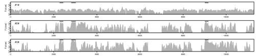

Alignments generated with PRANK contain more information than can be stored using the traditional sequence alignment formats, so we have defined a new alignment format called HSAML. Our new web-tool, Wasabi, uses this format and provides a superb graphical front-end to open and browse HSAML alignments.
The HSAML format follows the XML standards and, in addition to Wasabi, any program supporting the XML is able to open and manipulate the alignments. Two of the possible software packages to handle the data are R (see here), a free software environment for statistical computing and graphics, and perl (see here), a cross-platform programming language. We will not go into details of R and perl here but provide simple examples how to manipulate HSAML-formatted data using these two packages. Which ever is your choice of a programming language, it is strongly recommended that you use one of the existing XML parsers to import the HSAML alignments and will not try to read them as text files!
The XML schema gives a formal definition of the HSAML format.
An alignment generated by PRANK consist of four elements: newick, nodes, selection and model; sub-elements of nodes are either leaf or node. Colours refer to this example alignment.
The element newick defines the alignment guide tree (or phylogeny) in the 'newick' format. The tree should be complete and have a name for each node (terminal and internal) and a branch length for each branch. A node name and branch length are separated by a colon, two sister nodes separated by a comma and surrounded by a pair of brackets. A node name can be any alpha-numeric string (A-Za-z0-9 + some other characters) except that the names for internal nodes are always surrounded by hash signs (#) and the names for terminal nodes never contain hashes. It is convenient to keep the node names short and provide more information in nodes.
The element nodes contains terminal and internal nodes. A terminal node is defined in leaf and has attributes 'id', which matches a node name in the newick tree, and 'name',the full name of the sequence. The only content of a leaf is 'sequence', an aligned sequence. An internal node is defined in node and has one attribute, 'id' that matches a node name in the newick tree. The contents of a node are of the type 'probability', each having the attribute 'id' matching one of the process id's in the element model.
The element selection is optional and only appears when a user has deselected some of the alignment sites using filters based on the sitewise posterior probabilities. Selection consists of 'selected_sites', a boolean vector defining if a site is selected/deselected, and 'selection_criteria', a description of the process resulting to the current selection.
The element model has two purposes: first, it gives further information of the processes for which nodes contain posterior probabilities for (attributes 'id' and 'name'), and, second, it specifies how PRANKSTER displays this information. The meaning of different attributes becomes obvious if one plays with PRANKSTER (Settings->Plot), and the range of possible attribute values is defined in the XML schema.
This R script plots the posterior probability of one of the processes across the alignment sites. If you download the script here and the example alignment here, start R and type the command:
source("plot_xml.rs")
you should obtain a plot similar to this:

(To reproduce the plot shown here, you should download this script.)
The plotted value is the posterior probability of the slow process across the alignment sites in the three internal nodes. In the two latter plots, the broad peaks match rather well with the known coding exons that are indicated by the black bars in the top (not included in the example script).
Note that the script requires XML package to be installed. R packages can be found from the project homepage following the links to CRAN and Packages. Consult the R manual to learn more about the package installation.
This perl script demonstrates how to select nodes and clades of an alignment tree, manipulate sequences, extract posterior probability values and work with names and id's. A detailed explanation of the use of the script and the functions implemented in the module is given in the source code file.
The script and the additional module required by the script can be downloaded from here and here, and the use of the script tested with this example dataset. Typing:
perl parseExample.pl
should read in the alignment and print out the location and sequence of the sites for which the alignment reliability score is below 50% in the human-chimp subtree.
Note that the script requires the XML::libXML module to be installed (download it from here). Consult the perl manual to learn more about the package installation.
The XML schema was defined by Nicolas Rodriguez.